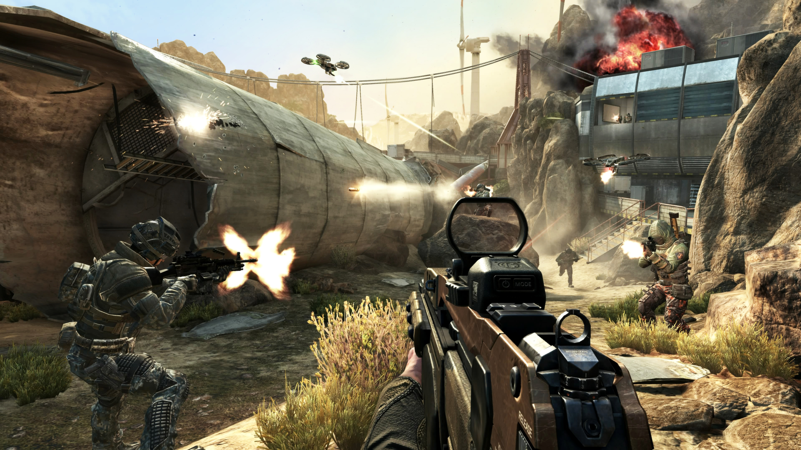

gameplay
black ops 2 is een 2012 first-person shooter video game. dit betekent dat Een FPS toont gewoonlijk de armen van de hoofdrolspeler onderaan het scherm, die een wapen draagt dat is uitgerust. Van de gamer wordt verwacht dat hij zijn avatar door het spel voortbeweegt door deze voorwaarts, achterwaarts, zijwaarts enzovoort te bewegen met behulp van de game controller. Voorwaartse bewegingen van de controller hebben tot gevolg dat de avatar zich voorwaarts door het landschap beweegt, meestal met een licht schommelende beweging van links naar rechts om de menselijke gang goed na te bootsen. Om het niveau van realisme te verhogen, bevatten veel spellen naast de gewone geluidseffecten ook geluiden van ademhaling en voetstappen.)
multiplayer
In Black Ops 2 is de belangrijkste modus die je speelt multiplayer. In multiplayer kun je het tegen andere spelers opnemen in korte speltypen uit de Call of Duty-franchise.
zombies
Het speltype Zombies keert terug in Black Ops II, met Green Run, dat drie subkaarten bevat, namelijk Town, Farm en Bus Depot, evenals drie speltypen, namelijk TranZit, Survival en Grief. Het speltype Grief wordt geïntroduceerd, en later ook het speltype Turned, waarin spelers het tegen elkaar opnemen. Het spelverloop is sterk verbeterd, zoals het gebruik van de aangepaste Multiplayer-engine die meer capaciteit en andere mogelijkheden biedt, zoals de Theater-modus en de mogelijkheid om kaarten te maken waarop spelers tegen elkaar kunnen vechten.
campange
.jpg)
De campagne van het spel volgt het verhaal van 'Black Ops 1' op en speelt zich af in de late jaren 1980 en 2025. In de jaren '80 wisselt de speler tussen Alex Mason en Frank Woods, twee van de hoofdrolspelers uit Black Ops 1, terwijl de speler in 2025 de controle krijgt over Mason's zoon, David. In beide periodes achtervolgen de personages Raul Menendez, een Nicaraguaanse kartelleider, die verantwoordelijk is voor de ontvoering van Woods in de jaren '80 en die later in 2025 een tweede Koude Oorlog ontketent. De campagne bevat niet-lineaire gameplay en heeft meerdere eindes.